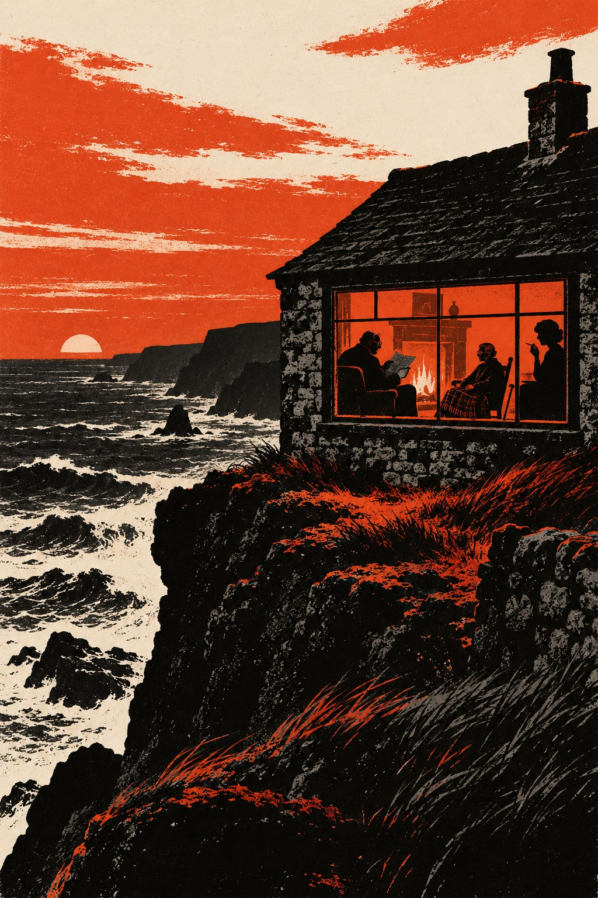

Долг

Теперь покоятся леса,
И скот, и люди, города и нивы,
И спит весь мир.— Пауль Герхардт, «Вечерняя песня», 1647
Глава первая
Папка легла на стол Кристофера Лейна в четверг, в половине пятого, когда на пятом этаже оставались только дежурные и те, кому незачем было спешить домой. Лейну было под тридцать. Он второй год служил в маленьком отделе при управлении кадров, который в Цирке называли попечительским. Цирком, по старому адресу на Кембридж-серкус, британскую разведку по привычке звали её собственные сотрудники. Отдел занимался бывшими сотрудниками: их пенсиями, их вдовами, их обидами, а с недавних пор и их воспоминаниями, которые время от времени кто-нибудь из них садился писать.
Осенью восемьдесят пятого года работы у отдела прибавилось. В июле из Москвы вывезли человека, о котором в Цирке говорили только шёпотом и только в коридорах, где не было окон. В сентябре правительство выслало из страны двадцать пять советских дипломатов, и газеты неделю писали о шпионах больше, чем о королевской семье. А в том же году старый контрразведчик из соседнего ведомства, давно живший в Австралии, сел за мемуары, и правительство запретило их печатать, и юристы на обоих полушариях готовились судиться. На пятом этаже после этого стали бояться стариков. Старики помнили слишком много, обиды у них были старые и хорошо выдержанные.
В папке было одно письмо, переправленное диппочтой из генерального консульства в Нью-Йорке, и короткая записка консульского сотрудника. Записка сообщала, что письмо оставила в консульстве лично пожилая дама, гражданка Соединённых Штатов, что дама была вежлива, настойчива и просила передать конверт «в ту службу, которая знает, где найти адресата». Сотрудник консульства, не зная, что с этим делать, отправил конверт в Лондон, а там его после двух недель хождения по кабинетам вскрыли и отдали в попечительский отдел, потому что больше отдать было некуда.
Письмо было написано по-английски, от руки, на тонкой голубой бумаге для авиапочты, почерком ровным и мелким, без единой помарки, и строки стояли так тесно, будто бумагу берегли. В нём говорилось, что пишущая, Ханна Вайс, проживающая в Нью-Йорке, просит передать её просьбу о встрече господину Джорджу Смайли, который в начале сороковых представлял в Стокгольме одну швейцарскую фирму. Что она будет в Лондоне в конце октября и пробудет неделю. Что господин Смайли поймёт, кто она, а для справки она прилагает номер своего дела, и дальше шёл номер, шведский, с косой чертой и двумя последними цифрами года: сорок три. Что она не нуждается ни в деньгах, ни в помощи, и что встреча нужна ей по причине личной и неотложной. Подпись была такая же аккуратная, как весь текст.
Лейн прочёл письмо дважды, потом посмотрел на номер дела и ничего в нём не понял.
⁂
Начальник отдела, Олдридж, большой мягкий человек, который всю жизнь просидел в канцеляриях и гордился тем, что ни разу не был за границей по служебной надобности, выслушал его в пятницу утром, не перебивая.
— Смайли, — сказал он, когда Лейн закончил. — Ну, конечно, Смайли.
Это имя в Цирке все, кто был старше сорока, произносили чуть тише остальных слов, и Олдридж не был исключением. Лейн слышал его несколько раз в столовой, обычно в конце длинных историй, которые рассказывали не ему. Он знал, что это старик, который когда-то, ещё до прихода Лейна, нашёл на пятом этаже советского агента, сидевшего там тридцать лет, что потом он недолго руководил всей службой и ушёл, и что с тех пор его иногда зовут в Саррат, в загородную школу Цирка, читать курсантам лекции, после которых курсанты неделю ходят задумчивые. Больше Лейн не знал ничего.
— Регистратура что-нибудь даёт? — спросил Олдридж.
— Немного. Швеция, военное время, работа под коммерческим прикрытием, отозван в сентябре сорок третьего. Отчёты за эти годы в архиве, но по запросу нашего отдела их не выдают. Фамилии Вайс в карточках нет.
— Значит, она была не нашей.
— Или её не стали записывать.
Олдридж посмотрел на него с уважением, которое в его глазах означало, что Лейн сказал лишнее.
— Вот что, — сказал он. — Старик ничего не напишет, он не из таких. А вот она может. Ей за семьдесят, она американка, у неё к нам дело, которому сорок лет, и она называет нам номер шведского дела вместо своей биографии. Мне это не нравится. Наверху это понравится ещё меньше, особенно сейчас. Съездите к нему. Посмотрите на него. Узнайте, кто она такая и чего ей нужно. И чтобы никаких газет.
— А если он не захочет говорить?
— Захочет, — сказал Олдридж. — Он всегда говорит. Беда в том, что потом выясняется, что он сказал только то, что собирался.
⁂
В справочнике Цирка у Смайли значился адрес в Челси, на Байуотер-стрит, и телефон. Лейн позвонил в пятницу вечером. Трубку сняли после шестого гудка, и голос, немолодой и вежливый, назвал номер медленно и без всякого вопроса в голосе.
Лейн представился так, как его учили представляться бывшим сотрудникам: имя, отдел и ничего больше. На том конце помолчали.
— Попечительский, — повторил голос, и Лейну показалось, что старик улыбается. — Я не знал, что я нахожусь на попечении. Чем могу быть полезен, мистер Лейн?
— Речь идёт об одном письме, сэр. Мне бы не хотелось по телефону.
— Разумеется. Мне бы тоже не хотелось. Приезжайте завтра к одиннадцати, если вас не пугает беспорядок. Жена в отъезде, и я, боюсь, распустился.
Лейн записал время, хотя и так бы его запомнил, и положил трубку. Только потом он сообразил, что старик не спросил, от кого письмо.
Глава вторая
Дом на Байуотер-стрит оказался маленьким, в два окна по фасаду, с чёрной дверью и медным молотком, который давно никто не чистил. Улица была короткая и тихая, с тупиком в конце, и Лейн, оставив машину на Кингс-роуд, прошёл её до конца и обратно, потому что пришёл рано и не хотел стоять у двери.
Смайли открыл сам. Он был ниже, чем Лейн себе представлял, полный, в вязаной кофте поверх рубашки с галстуком, и смотрел сквозь толстые очки с тем вежливым недоумением, с каким смотрят на разносчика, перепутавшего адрес. В середине октября в прихожей было холодно, и пахло старой бумагой и чаем.
Книги были везде: на полках до потолка, на лестнице, на подоконнике и стопками на полу в гостиной, где Смайли освободил для гостя кресло, переложив с него стопку на диван. Лейн успел разглядеть корешки: немцы, почти одни немцы, старые издания с готическими буквами, и на столе раскрытая тетрадь с выписками в два столбца, как у студента перед экзаменом.
— Я здесь всё собираюсь что-нибудь написать о Гриммельсгаузене, — сказал Смайли, перехватив его взгляд. — Уже лет десять собираюсь. Не пугайтесь, это не мемуары. У вас ведь сейчас все боятся мемуаров.
Лейн не нашёлся, что на это ответить, и отдал ему конверт.
Смайли достал письмо, снял очки, протёр их широким концом галстука и надел снова. Читал он медленно, один раз, и дольше всего задержался на строчке с номером. Лейн видел, как его левая рука, державшая угол листа, на мгновение замерла. Больше ничего в лице старика не переменилось.
— Вы её знаете, сэр? — спросил Лейн.
— Знал, — сказал Смайли. — Давно. Она была стенографисткой и переводчицей. Очень хорошей переводчицей.
Он сложил письмо по старым сгибам и держал его на колене, не возвращая.
— На пятом этаже беспокоятся, — сказал он, и это был не вопрос. — Я их понимаю. Пожилая дама из Америки с номером старого дела, пожилой господин с недописанной книгой о Гриммельсгаузене. А в газетах и так каждый день пишут о нас.
— Меня просили узнать, чего она хочет.
— Я не знаю, чего она хочет, — сказал Смайли, и Лейн, к своему удивлению, поверил. — Но в газеты она не пойдёт. Вы можете написать это в своём отчёте от моего имени.
— Разрешите спросить, почему вы так уверены?
— Она молчала сорок лет, мистер Лейн. За сорок лет до любой редакции можно дойти пешком.
⁂
Они договорились быстрее, чем Лейн опасался. Смайли спросил, нельзя ли ему самому встретить её в аэропорту, и Лейн, краснея, объяснил, что имеет на этот счёт распоряжение: встречает он, Лейн, и сначала разговаривает с ней он, а встреча с мистером Смайли будет после. Смайли кивнул, словно именно такого ответа и ждал.
— Тогда одна просьба, — сказал он. — Когда вы её увидите, не говорите ей, что вы из попечительского отдела. Скажите, что вас прислал я. Это будет почти правдой.
Он встал, чтобы проводить гостя, и по дороге к двери остановился у полки, не глядя достал маленький томик в выцветшем синем переплёте и раскрыл его. Книга открылась сама, на одной и той же странице, там, где в ней когда-то долго что-то лежало. Лейн увидел немецкое стихотворение в четырнадцать строк и светлый прямоугольник на пожелтевшей бумаге, где долго лежал какой-то листок, потому что там страница не пожелтела. Смайли посмотрел на этот прямоугольник, закрыл книгу и поставил на место.
— Она прилетает двадцать восьмого, — сказал Лейн. — В понедельник.
— Да, — сказал Смайли. — У вас в папке написано.
В машине Лейн долго сидел, не заводя мотора, и составлял в голове отчёт. Бывший сотрудник знает пишущую, встречаться с ней согласен, угрозы публикации не видит. Всё это было правдой. Про книгу в синем переплёте он решил не писать, потому что не знал бы, как объяснить, почему она ему запомнилась.
Глава третья
Рейс из Нью-Йорка приземлился в Хитроу в семь утра, на сорок минут позже расписания. Лейн стоял у выхода из таможни с табличкой, на которой было написано только «Вайс», и чувствовал себя шофёром из прокатной конторы.
Она вышла одной из последних, медленно, опираясь на палку с резиновым наконечником, и сразу нашла его глазами, хотя табличку он держал низко. Маленькая, очень худая, с коротко остриженными седыми волосами и в очках с толстыми стёклами, она была одета в тёмно-серое пальто, добротное и немодное. За ней носильщик вёз на тележке один чемодан. Сумку, старую, кожаную, с медной застёжкой, она несла сама, прижав локтем.
— Миссис Вайс? Кристофер Лейн. Меня прислал мистер Смайли.
— Мисс Вайс, — поправила она. Английский у неё был точный, американский, и сквозь него едва угадывался другой язык, как проступает под свежей краской старый рисунок обоев. Она оглядела его с головы до ног, не скрываясь. — Нет, — сказала она наконец. — Вас прислали другие. Но мистер Смайли знает, что вы здесь, и попросил вас сказать мне именно эти слова. Это уже кое-что. Где ваша машина?
⁂
Отель она выбрала сама, из Нью-Йорка, по путеводителю: узкий дом в Блумсбери, в двух улицах от Британского музея, с ковровой дорожкой на лестнице и фотографиями королевы в коридорах. Пока они ехали, она смотрела в окно на мокрые пригороды и молчала, и Лейн, которому велели узнать, чего она хочет, тоже молчал, потому что не знал, с чего начать.
Заговорила она только в гостинице, в маленькой гостиной на первом этаже, куда им принесли чай. Она сняла пальто, но сумку положила на колени.
— Вы хотите знать, кто я такая, — сказала она. — Хорошо. Я переводчица. Сорок лет я переводила в нью-йоркских судах, в иммиграционной службе и в конторах адвокатов, с немецкого и шведского на английский и обратно. Последние двадцать лет больше всего для адвокатов, которые вели дела о возмещении с Западной Германией. Люди приходили и рассказывали, что у них забрали, а я переводила это на язык, на котором в Бонне можно было считать. В прошлом году я ушла на пенсию. Замужем я не была. Детей нет. У меня есть квартира на Вест-Сайде, кот и болезнь, о которой мне не хочется говорить. Кота взяла соседка. Врачи советовали мне никуда не летать. Врачи очень любят давать советы людям, которым они уже ничем не могут помочь.
Она отпила чаю и посмотрела на него поверх чашки.
— Теперь вы хотите спросить, не собираюсь ли я что-нибудь написать. Не собираюсь. Я всю жизнь записывала чужие слова, мистер Лейн. Свои я не записывала никогда и начинать не собираюсь.
— Тогда позвольте спросить, почему именно сейчас.
Ему показалось, что она не ответит. Она долго сидела неподвижно, обеими руками держа чашку.
— В шестьдесят седьмом году, — сказала она, — мне пришла бандероль из Стокгольма, от нотариуса. Умер один человек, которого я видела в жизни один раз, старый шведский полицейский на пенсии. По завещанию он оставил мне свой блокнот. Больше ничего, только блокнот. Такие вещи не читают сразу. Я читала его восемнадцать лет. А в июне мне сказали, что времени дочитать у меня осталось немного.
Она поставила чашку и щёлкнула медной застёжкой сумки, не открывая её, словно проверяла, на месте ли она.
— Я вам скажу ещё одно, — сказала она, — и вы можете написать это в своём отчёте, чтобы ваше начальство спало спокойно. Я приехала не за тем, чтобы что-нибудь рассказать. Я приехала послушать.
⁂
Отчёт Лейн писал в понедельник вечером и переписал три раза. В первом варианте были болезнь, сумка и фраза про то, чтобы начальство спало спокойно, и он понял, что Олдридж после такой фразы спать перестанет совсем. В третьем варианте осталось следующее: прибыла, размещена, намерений идти в печать не высказывает, цель визита личная, связана с историей военного времени и третьих лиц не касается. Встреча с бывшим сотрудником назначена на вторник, на пять часов, в отеле.
О блокноте шведского полицейского он написал одну строчку и потом её вычеркнул, потому что не мог ничего к ней добавить, а строчка без продолжения в отчёте всегда порождала вопросы, на которые отвечать придётся ему.
Глава четвёртая
Смайли пришёл в отель без пяти пять, в том же старом пальто, в котором ходил по всем своим делам, и с мокрым зонтом, который не сразу сумел сложить. Лейн ждал его в вестибюле. Смайли вежливо пожал ему руку и так же вежливо попросил подождать здесь, и Лейн, у которого было распоряжение присутствовать при разговоре, остался в вестибюле.
Она сидела в той же маленькой гостиной, у окна, в кресле с высокой спинкой, и не встала, когда он вошёл. Он закрыл за собой дверь со стеклом и остановился. В последний раз он видел её сквозь решётку, похудевшую, без очков, сорок два года назад. Теперь на ней были очки, и сквозь них она рассматривала его с насмешливым вниманием, которое он помнил по портовым кафе Сёдера.
— Вы стали очень старым, господин Смайли, — сказала она по-немецки.
— Я и тогда не был молодым, — сказал он тоже по-немецки. Он давно ни с кем не говорил на этом языке вслух и почувствовал, как слова выходят чуть медленнее, чем ему хотелось.
— Садитесь. Ваш молодой человек за дверью простудится, пока вы решаете.
Он сел напротив неё, положив мокрый зонт на пол у ног, и некоторое время они молчали. За окном в сумерках проезжали автобусы с освещёнными окнами, и от каждого чуть дрожало стекло.
— Эклунд умер в шестьдесят седьмом, — сказала она. — Вам ведь не сообщили.
— Нет.
— Он оставил мне свой блокнот. Ваш молодой человек вам, наверное, уже рассказал. Там много чего. Про жену, которая болела. Про то, как вы в бане садитесь пониже, потому что не привыкли к пару, и сидите там без очков. Про то, что вы читаете стихи в трамвае. И есть одна запись, в феврале сорок третьего. Я её знаю наизусть. «В бане англичанин сказал мне то, чего я записывать не стану. Думаю, на его месте я сделал бы то же самое. Хорошо, что я не на его месте». И всё. Дальше про лекарства для жены.
Она помолчала.
— Двадцать четыре года я знала, что вы меня продали. Это было просто. С этим можно было жить, я и жила. А потом пришёл блокнот, и восемнадцать лет я думаю, что, может быть, нет. Вы не представляете, господин Смайли, как утомляет это «может быть».
— Представляю, — сказал Смайли.
Она посмотрела на него внимательнее, чем раньше, и, похоже, поверила. Потом открыла сумку и достала конверт.
Он узнал его сразу, и потому, что узнал, ему стало неловко, как бывает неловко увидеть себя на старой фотографии. Конверт пожелтел, углы его стёрлись, и на нём его собственным почерком, мелким, как и теперь, только твёрже, было написано: «Фройляйн Ханне Вайс». Клапан был цел. В одном месте его кто-то очень давно начал подцеплять ногтем и бросил.
— Прочтите его мне, — сказала она. — Вслух. Сами.
Он не протянул руки, и она не протянула конверта. Он лежал у неё на коленях, на сумке.
— Но не здесь, — сказала она. — Здесь пахнет полиролью, и за стеклом сидит ваш молодой человек. Я хочу видеть море, когда буду слушать. Два года после Кроноберга кругом был один лес. В Нью-Йорке есть только реки. У вас ведь есть жена?
— Есть, — сказал Смайли. — Сейчас она в Корнуолле. У неё там дом над морем.
Он сказал это и только потом понял, что сказал и что из этого следует. Ханна Вайс поняла это на секунду раньше него и впервые за весь разговор улыбнулась.
— И ещё, — сказала она. — Вы мне однажды рассказывали про свой колледж в Оксфорде. В кафе на Сёдере, в декабре, когда выключили свет и нам всё равно нечего было делать. Тогда вы мне ещё нравились. Вы сказали, что там есть двор, где слышно только часы и галок. Я хочу послушать этих галок, если это по дороге.
До Корнуолла это было не по дороге, и оба это знали.
— По дороге, — сказал Смайли.
⁂
В вестибюле он сказал Лейну, что в четверг утром повезёт мисс Вайс в Корнуолл, в дом своей жены, и что по дороге они заедут в Оксфорд. Он сказал это столь же вежливо, как просил подождать, и Лейн понял, что его не спрашивают.
Олдридж, которому Лейн позвонил из телефонной будки на углу, долго дышал в трубку.
— Старикам нужен шофёр, — сказал он наконец. — Вот и станьте шофёром. И звоните мне каждый вечер.
Глава пятая
В Оксфорд они приехали в четверг к полудню, на сером «ровере» из гаража Цирка, который Лейн получил под расписку. Ханна Вайс сидела сзади, Смайли рядом с ней, и всю дорогу они говорили по-немецки, негромко и с длинными паузами. Немецкий Лейн учил в школе и забыл, и из всего разговора разобрал только названия: Гётеборг, Мальмё, Сёдер, и однажды имя Эклунда. После Хай-Уикомба она заснула, и Смайли до самого Оксфорда смотрел в окно на поля, над которыми стоял туман.
Колледж оказался небольшим и тёмным, одним из тех, мимо которых туристы проходят, не поднимая глаз. Привратник в тёмном костюме не узнал Смайли, но пропустил их, стоило тому назвать год своего выпуска. За первым двором, где студенты в шарфах спорили о чём-то у доски объявлений, был второй, маленький, с часами над аркой и скамьёй под старым клёном. На газоне лежали жёлтые листья. Галки сидели на крыше, на трубах и на водостоках, и разговаривали между собой сухими короткими голосами.
Ханна села на скамью, положила обе руки на палку и закрыла глаза. Смайли стоял рядом. Часы пробили четверть, галки снялись все разом, облетели двор и сели обратно. Лейн остался под аркой и почему-то старался не шуметь ботинками по камню.
— Вы сказали правду, — сказала она наконец по-английски, не открывая глаз, и Лейн не понял, для кого она перешла на английский, для него или для галок. — Только часы и галки. Я думала, вы придумали это, чтобы меня развлечь. Вы тогда часто придумывали, чтобы меня развлечь.
Смайли ничего не ответил.
⁂
Из колледжа они вышли в начале второго. Машина стояла на Брод-стрит, и Ханна захотела дойти до неё пешком, мимо книжных лавок. Перед большим книжным магазином она остановилась, чтобы посмотреть витрину, сказала что-то Смайли насчёт перевода на обложке и вдруг опустилась на тротуар, без звука, словно у неё вынули из-под ног опору. Палка упала и покатилась к бордюру.
Лейн растерялся. Он умел многое из того, чему учили в Саррате, но в Саррате не учили, что делать, когда на Брод-стрит падает старуха, за которую он отвечает перед Олдриджем. Смайли уже стоял рядом с ней на коленях, сняв своё пальто, и подкладывал его ей под голову. Вокруг начали собираться люди.
Из магазина вышел седой грузный человек под пятьдесят, со свёртком книг под мышкой. Он оглядел толпу и лежащую женщину одним быстрым недовольным взглядом, сунул свёрток в руки студенту, стоявшему ближе всех, и опустился на одно колено с другой стороны. Взял её запястье и стал считать пульс, глядя на часы.
— Полиция, — сказал он никому в особенности и показал толпе удостоверение так быстро, что никто не успел его прочесть. — Расступитесь, ей нужен воздух. Вы, — это было студенту со свёртком, — телефонная будка на углу. Неотложка, Брод-стрит, перед книжным. Книги потом отдадите.
Студент побежал. Ханна открыла глаза и сказала по-немецки, что с ней всё в порядке, а потом, спохватившись, повторила то же самое по-английски. Седой человек ответил ей на хорошем немецком, что не сомневается и что именно поэтому ей стоит полежать ещё немного. Она посмотрела на него с интересом и послушно закрыла глаза.
Только тогда он поднял голову и увидел Смайли. Лейн, стоявший с её палкой в руках, видел, как в лице полицейского что-то случилось и сразу же было убрано, словно папка, открытая не на той странице.
— Мистер Стандиш, — сказал он вполголоса.
— Добрый день, — сказал Смайли. — Уже, надо полагать, не сержант.
— Старший инспектор, — сказал полицейский, и по тому, как он это сказал, Лейн понял, что выше этого он уже не поднимется.
Больше они ничего друг другу не сказали. Полицейский не спросил, кто эта женщина, не спросил, кто такой Лейн, и на номер лондонского «ровера» у тротуара, на который Лейн невольно оглянулся, тоже не посмотрел. Когда пришла скорая, он коротко поговорил с санитарами, забрал у студента свои книги, кивнул Смайли и ушёл в сторону Тёрл-стрит, не оглядываясь. В свёртке, насколько успел разглядеть Лейн, были ноты.
⁂
В больнице Джона Рэдклиффа, на холме в Хедингтоне, Ханна Вайс пробыла два часа. Молодой врач с индийской фамилией хотел оставить её на ночь, потом на неделю, потом попросил расписаться в том, что она уходит против его совета. Она расписалась, не читая, и сказала ему, что он сообщил ей то же самое, что и врачи в Нью-Йорке, только вежливее, и что ей это было приятно.
Ехать в Корнуолл в сумерках было поздно, и они заночевали в «Рэндольфе». Вечером Лейн звонил Олдриджу из телефонной кабины в вестибюле и доложил об обмороке, о больнице и о том, что выезжают утром. О седом полицейском, который назвал Смайли чужим именем, он не сказал ничего. Положив трубку, он попытался понять, почему не сказал, и до конца так и не понял.
Глава шестая
Дом стоял на краю деревни, там, где дорога кончалась и дальше шла уже тропа по утёсу, низкий, серый, из дикого камня, с шиферной крышей и кривой трубой. Энн получила его в наследство от тётки лет пятнадцать назад и с тех пор уезжала сюда каждую осень, одна или не одна, и в этот раз одна. Смайли знал это по тому, что она сама подошла к телефону, когда он звонил во вторник вечером, и по тому, что она ни о чём не спросила.
Из Оксфорда они ехали целый день, с остановками, и добрались в темноте. Энн вышла к калитке с фонарём, в старой мужской стёганой куртке и резиновых сапогах, и первой подала руку Ханне, а не мужу. Потом посветила фонарём в лицо Лейну, который доставал из багажника чемодан.
— А это кто? — спросила она мужа.
— Это мистер Лейн. Он нас привёз.
— Значит, оттуда, — сказала Энн, и в этом «оттуда» Лейн услышал столько всего, что не нашёлся с ответом. — В доме две спальни, мистер Лейн. В «Якоре» внизу у гавани сдают комнаты, и там есть телефон, который вам, наверное, понадобится. Скажите Хью, что вы от меня. И приходите завтракать, завтрак в девять, если вы встаёте так рано.
⁂
На кухне горела плита, и было тепло. Энн налила Ханне супу и села напротив неё с бокалом, подобрав под себя ноги, и Смайли, которому никто не налил ни супу, ни вина, налил себе сам и сел с краю. Он видел, что женщины разглядывают друг друга без стеснения, и так же без стеснения не замечают его.
— Джордж сказал мне по телефону три фразы, — сказала Энн. — Что вы его старая знакомая по войне, что вы больны и что вы хотите видеть море. Всё остальное я придумала сама, пока вас ждала. Скажите мне, что из этого неправда, и я больше не стану придумывать.
— А что вы придумали? — спросила Ханна.
— Что он вас когда-то очень дурно обманул. Для вашей же пользы, разумеется. Он у нас всех обманывает для нашей же пользы. И что вы приехали сказать ему всё, что о нём думаете, пока есть время.
Ханна посмотрела на неё поверх ложки, потом на Смайли и снова на Энн.
— У вас хорошее воображение, — сказала она.
— У меня была большая практика. Вы его любили?
Смайли поставил бокал на стол. Ни одна из них на него не посмотрела.
— Нет, — сказала Ханна, подумав. — Мне было не до того. Я ему доверяла. Это, по-моему, хуже.
Энн долго смотрела в свой бокал.
— Да, — сказала она наконец. — Это хуже. У меня тоже было и то и другое, так что я могу сравнивать.
Потом она встала, достала из буфета ещё один бокал и налила Ханне вина, не спрашивая, можно ли ей. Ханна не стала говорить, что ей нельзя. Они выпили, и Смайли понял, что они пили за что-то, чего ему не скажут.
— Завтра, — сказала Ханна, обращаясь к Энн, и Смайли заметил, что обращается она именно к ней. — Завтра вечером он прочтёт мне одно письмо. Вы можете присутствовать, если хотите. Оно по-немецки.
— Я не знаю немецкого, — сказала Энн. — Но я знаю его голос. Этого обычно хватает.
Уже после полуночи, когда Ханна легла, Энн долго мыла посуду, не давая ему помочь, а потом, вытирая руки, сказала, не оборачиваясь:
— Она приехала не ругаться, Джордж. Ты ведь это понял?
— Не уверен.
— Ты никогда не уверен, когда тебя собираются простить. Тебе легче, когда не прощают. Я за столько лет к этому привыкла.
Она повесила полотенце на поручень плиты, поцеловала его в лоб и пошла наверх.
⁂
В «Якоре» Лейну дали комнату под самой крышей, с окном на гавань, где на отливе лежали на боку рыбачьи лодки. Хозяин, Хью, услышав, что он от миссис Смайли, поставил ему пива за счёт заведения и ни о чём не спросил.
Олдридж взял трубку после первого гудка.
— Ну? Чего она хочет?
— Чтобы ей прочли письмо, — сказал Лейн и тут же пожалел.
— Какое письмо?
Лейн посмотрел в окно на лодки, лежавшие на боку в жидкой грязи, и вспомнил светлый прямоугольник на странице немецкой книжки.
— Старое личное письмо, сэр, — сказал он. — Военных лет. Службы оно, насколько я понимаю, не касается.
На том конце долго молчали.
— Личное, — повторил Олдридж так, словно ставил папку на полку и не был уверен, что она там удержится. — Ну что ж. Звоните завтра.
Глава седьмая
В субботу с утра дул ветер с запада, и море под утёсом было серым, в белых полосах. Ханна проспала до полудня. После обеда она попросила Смайли довести её до скамьи на тропе, в сотне шагов от дома, и сидела там час, закутавшись в куртку Энн, и смотрела на море так же, как в Оксфорде слушала галок, почти закрыв глаза. Смайли стоял неподалёку и делал вид, что смотрит на чаек. Они не сказали друг другу ни слова.
Лейн пришёл к чаю, посидел в кухне полчаса и ушёл обратно в «Якорь» до того, как стемнело. Никто его не просил уходить.
⁂
Вечером Энн разжгла в гостиной камин и села в углу, у окна, дальше всех от огня, с сигаретой, которую так и не закурила. Ханна сидела в кресле у камина, с пледом на коленях. Она достала из сумки конверт, подержала его и протянула Смайли.
Он вскрыл его ножом для бумаги с каминной полки, аккуратно, по краю, как вскрывал в жизни много чужих писем. Шесть страниц, сложенных вчетверо, слежались за сорок два года и раскрылись не сразу. Чернила выцвели до цвета слабого чая, но строки читались все. Он надел очки для чтения и посмотрел на первую страницу, и первая страница посмотрела на него тридцатисемилетним и не спавшим всю ночь.
Он начал читать.
«Дорогая фройляйн Вайс, вы, вероятно, не прочтёте этого письма, и поэтому я могу написать вам правду, что со мной случается редко».
Голос его сначала звучал сухо, как на лекции в Саррате, и он сам это слышал и ничего не мог с этим поделать. Потом привык. На второй странице был Гётеборг: конторщик экспедиционного отдела, через руки которого шли накладные на подшипники, имени которого в письме не было, и то, что его слушала шведская полиция, а часть того, что слышала полиция, уходила в немецкую миссию. На третьей была сама миссия, в которой уже знали её имя, и пароход на Штеттин, и вода у причала, в которой находили людей, знавших слишком много. На четвёртой перечислялись три решения, одно за другим, с той самой дотошностью, с какой он в ту зиму их взвешивал. И там же, внизу, фраза, которую он забыл и теперь прочёл вслух, не успев споткнуться: «Из всех мест в этой стране немцы не могут достать вас только из шведской тюрьмы, и поэтому я отдал вас в тюрьму».
Ханна не шевельнулась.
На пятой странице была баня на Дроттнинггатан и пожилой комиссар, которому можно было довериться именно потому, что он служил Швеции и ничему больше и никогда этого не скрывал. И свидание в Кроноберге, на котором он молчал, потому что у двери стоял надзиратель, а всё, что слышал надзиратель, могло к концу недели оказаться в другом здании, на другом языке.
На шестой почерк становился неровным. Тот, кто писал, уже не объяснял. Он писал, что не просит прощения, потому что не имеет на него права, и что не раскаивается, потому что сделал бы это снова, и что одно с другим не сходится и сходиться не должно. Что если она когда-нибудь захочет спросить его об этом в лицо, он ответит. И что просит он только одного: чтобы она жила. Подписи не было, потому что в ту ночь в Стокгольме подпись могла стоить кому-нибудь жизни.
Он дочитал и сложил листки. В камине осело полено. За окном было слышно море.
⁂
Ханна долго молчала. Потом протянула руку, и он отдал ей письмо. Она положила его на плед, не разворачивая, и накрыла ладонью.
— В Кроноберге я плюнула вам под ноги, — сказала она. — Сорок два года я была рада, что плюнула. Это было лучшее, что я сделала за всю войну. Я вспоминала об этом в лагере, когда было холодно, и в Нью-Йорке, когда люди в конторе адвоката рассказывали мне про своих родных. Я думала: а я хотя бы плюнула.
Смайли кивнул.
— И вот теперь я не знаю, что мне с этим делать, — сказала она и посмотрела на него сердито, словно он и теперь был в этом виноват. — Сорок два года нельзя взять назад. И плевок нельзя.
— И не надо, — сказал Смайли. — Вы имели на него право.
— Я знаю, что имела. Не утешайте меня, господин Смайли, вы этого никогда не умели.
Она помолчала, и когда заговорила снова, голос у неё стал другой, деловой.
— Теперь моя часть. На втором допросе следователь сказал мне, что про словарь им рассказал человек, которому я доверяла. Он был молодой и очень доволен собой. Он ждал, что я назову ему этого человека и всех, кого я о нём знаю. У меня были ваша фамилия, ваш адрес и три кафе, где мы встречались. Я говорила только о себе. Не для вас, не думайте. Я просто не собиралась становиться такой, как вы. Но так уж вышло, что я вас не выдала, и это тоже нельзя взять назад.
Смайли снял очки для чтения и долго их складывал. В углу у окна Энн наконец чиркнула спичкой, посмотрела на огонёк и задула его, так и не закурив.
— Я знал, — сказал Смайли. — Эклунд мне написал. Одну строчку, в сорок пятом, без подписи, на адрес фирмы в Цюрихе. Что на допросах она говорила только о себе.
— И вы ничего не сделали.
— Ничего. Вы не захотели бы меня видеть. Я бы на вашем месте тоже не захотел.
Она кивнула, словно перевод сделан верно и поправлять в нём нечего. Потом достала из сумки что-то ещё, маленький чёрный блокнот в клеёнчатом переплёте, с обтрёпанным шнурком-закладкой, и положила его на столик между ними.
— Это ваше, — сказала она. — Он писал там о вас больше, чем обо мне, и на последней странице есть фраза, которая вас рассмешит. А письмо я оставлю себе. Оно теперь прочитано, и оно моё.
У окна Энн встала, тихо прошла за их креслами и на ходу, не останавливаясь, положила руку Ханне на плечо. Потом из кухни стало слышно, как она ставит чайник.
Глава восьмая
Итоговый отчёт Лейн сдал в среду, на следующий день после того, как отвёз мисс Вайс в Хитроу. В отчёте было две страницы. Прибыла тогда-то, убыла тогда-то. Встречалась с бывшим сотрудником трижды, в том числе в его частном доме в Корнуолле, в присутствии его супруги. В Оксфорде перенесла на улице приступ болезни, помощь оказана, внимания прессы инцидент не привлёк. Цель визита личная: прочитать вместе с бывшим сотрудником частное письмо военных лет. Сведений, затрагивающих деятельность Службы, письмо, по словам бывшего сотрудника, не содержит. Намерений обращаться в печать не высказывала. Рекомендуется папку закрыть.
К отчёту была приколота записка, которую Смайли написал на кухонном столе в Корнуолле и отдал Лейну незапечатанной, чтобы тот мог её прочесть. В записке было три строчки. Что мисс Ханна Вайс в начале сороковых оказывала пишущему личные услуги в Стокгольме и что за эти услуги понесла наказание по шведскому закону. Что претензий к Службе она не имеет и никогда не имела. Что приезжала она попрощаться. Подпись: Дж. С.
Олдридж прочёл оба документа при Лейне, сначала отчёт, потом записку, и записку перечитал.
— «Личные услуги», — сказал он. — Вот чему надо учиться, Лейн. Каждое слово правда, и ни одного слова, за которое можно ухватиться. Если кто-нибудь захочет поднять стокгольмские отчёты, ему придётся сначала объяснить, зачем ему это нужно, а объяснить будет нечего.
Он подписал на обложке папки «В архив» и отодвинул её на край стола.
— Вы в отчёте ничего не забыли? — спросил он, не поднимая глаз.
Лейн подумал о книге в синем переплёте, о седом полицейском на Брод-стрит и о том, как в аэропорту, у стойки, мисс Вайс протянула ему руку и сказала, что он всю неделю вёл машину очень бережно.
— Ничего существенного, сэр, — сказал он.
⁂
Бандероль из Нью-Йорка пришла на Байуотер-стрит в конце марта, в дождливый вторник, и почтальон оставил её на крыльце, потому что в щель для писем она не проходила. В ней было письмо адвокатской конторы с Мэдисон-авеню, вежливое и короткое. Контора с прискорбием извещала, что её давняя клиентка и сотрудница, мисс Ханна Вайс, скончалась в феврале в Пресвитерианской больнице и что вложение направляется адресату в соответствии с её распоряжением.
Вложением был старый конверт, вскрытый по краю ножом для бумаги, с шестью страницами внутри. Под словами «Фройляйн Ханне Вайс» другими чернилами и другой рукой, мелким ровным почерком стенографистки, было дописано одно слово по-немецки: «Прочитано», и инициалы.
Смайли не стал доставать страницы. Он посидел с конвертом в руках у окна, потом снял с полки томик Флеминга в синем переплёте, раскрыл его там, где он раскрывался сам, и положил конверт на светлый прямоугольник. Он лёг туда почти точно, только чуть толще, чем был когда-то, и книга теперь закрывалась не до конца.
Блокнот Эклунда лежал у него в столе с ноября. За эти месяцы Смайли прочёл его целиком, со шведским словарём, медленно, по нескольку страниц за вечер, и знал теперь, что комиссар думал о нём в сорок втором году, и не знал, что с этим знанием делать. Последнюю страницу он перечитывал чаще других. Там старый швед, в поезде на Стокгольм, писал, что англичанину, каким бы человеком он ни был, когда-нибудь придётся с ней встретиться. Ханна была права, фраза его рассмешила. В строгом предсказании старого шведа Смайли слышал зависть: сам Эклунд с ней больше не встретился.
В тот же вечер он достал из ящика свой чёрный блокнот, тот, что завёл в Оксфорде в пятьдесят шестом для того, что нельзя было ни доказать, ни забыть. Последняя запись в нём была семилетней давности и заканчивалась именем другой женщины, тоже умершей. Ниже он написал не таким твёрдым, как прежде, но всё ещё разборчивым почерком: «Ханна Вайс», и через тире две даты, стокгольмскую и корнуолльскую.
Потом он положил оба блокнота, свой и шведский, в ящик рядом, задвинул его и пошёл вниз ставить чайник. Энн собиралась вернуться к семи, и в доме надо было хотя бы слегка прибраться.